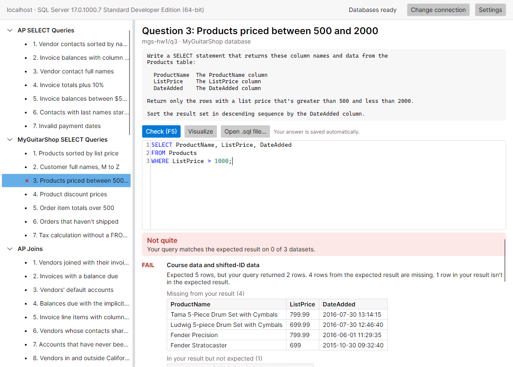
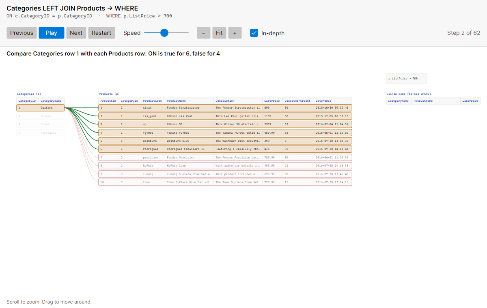
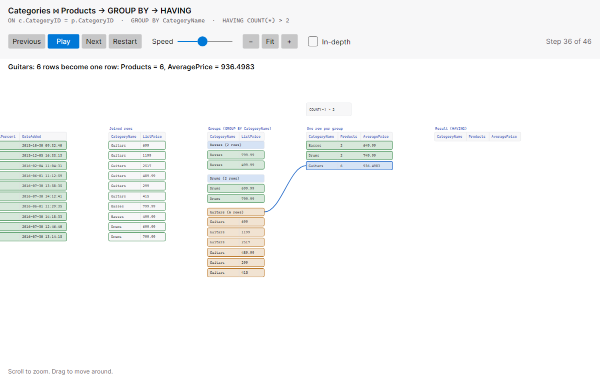
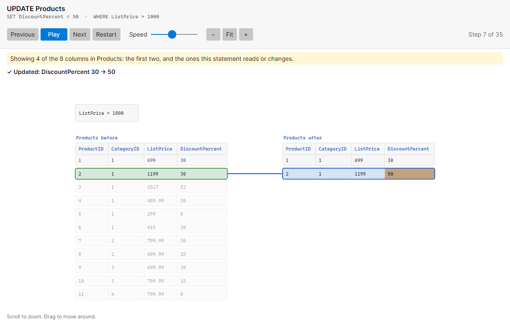
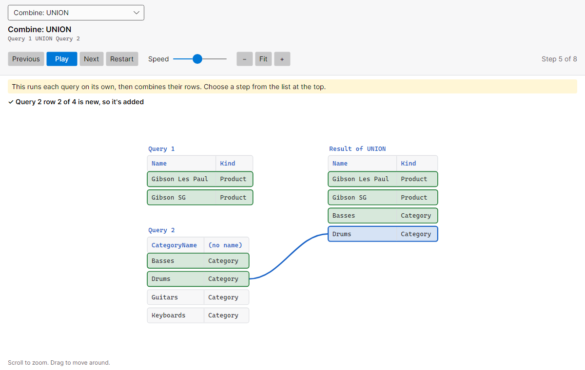
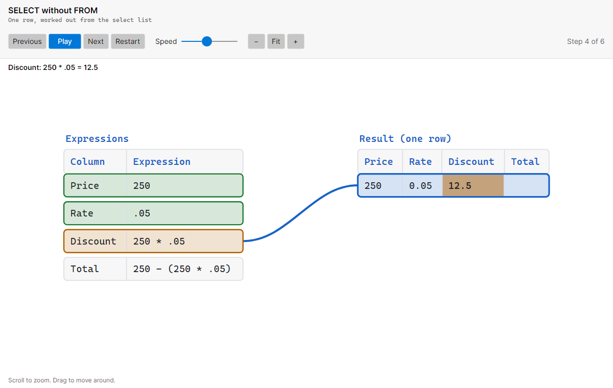

Know where your answer stands
Connect the app to your own SQL Server, pick a question, write your query and press F5. It runs your answer next to the instructor's solution on several sets of data, then shows you exactly which rows are missing or shouldn't be there. Your own databases are never touched.
Watch your SQL run
Click Visualize on a question to see your SQL play back one step at a time. SQL Server runs it for real and reports what happens to each row, so what you see always ends on your real result.
Joins
See which rows combine into each joined row, and which rows an outer join keeps with NULLs. For a query with one join, the In-depth view shows every comparison, including the ones where ON is false.


GROUP BY and HAVING
Rows drop into their groups, then each group collapses into one row. HAVING tests the groups the way WHERE tests rows. ROLLUP, CUBE and window functions are covered too.


INSERT, UPDATE and DELETE
See the table before and after, with each row tested and every changed value highlighted. Nothing is saved: your script runs in a transaction that's rolled back.


UNION, INTERSECT and EXCEPT
Each query plays on its own, then a last step combines their rows, showing which ones are duplicates or are found in the other query.


SELECT with no FROM
With no table to read, each expression works out one value of a single row, and you see the row fill in.


Features
Checking your answers
- SELECT queries, INSERT, UPDATE and DELETE scripts, and database scripting such as CREATE TABLE, indexes and constraints
- Tests each answer on several sets of data, including edge cases that catch queries that only work by luck
- Shows the rows that are missing or unexpected, and your whole result next to the expected one
- Checks that ORDER BY really sorts by what the question asks for
- Enforces what a question requires or forbids, such as using a join
- Gives hints when an answer fails, and shows solutions when your instructor allows it
Writing your SQL
- SQL editor with syntax highlighting
- Optional autocomplete for keywords, tables and columns
- Answers are saved automatically, with each question's pass or fail mark
- Open a .sql file and it stays linked, so saving it in SSMS or VS Code updates your answer
The visualizer
- Joins, WHERE, GROUP BY, HAVING, window functions, ORDER BY, DISTINCT and TOP
- UNION, INTERSECT and EXCEPT
- INSERT, UPDATE and DELETE, without changing anything
- Play, step, change speed, zoom and pan, which works well on a classroom display
- Follows the current row down long tables
Running the app
- Windows, macOS and Linux
- Works with a local SQL Server, or the Docker image on macOS and Linux
- Updates itself in the background
- Can remember your SQL Server password in your system's secure storage
- Follows your system's light or dark theme
Getting started
- Install SQL Server on your computer: a local install on Windows, or the Docker image on macOS and Linux.
- Download the app for your system. The install steps explain the warnings you'll see the first time you open it.
- Open the app and connect to your server. It builds its own copies of the course databases, which takes a few seconds.
- Pick a question, write your query and press F5.